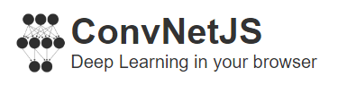

Entrenar red neuronal
Entrenar!
Cantidad de iteraciones de entrenamiento
Probar la red neuronal
Datos del auto
Valor de compra
Muy alto
Alto
Medio
Bajo
Valor de mantenimiento
Muy alto
Alto
Medio
Bajo
Cantidad de puertas
2
3
4
5 o más
Cantidad de personas
2
4
más
Tamano del baul
Chico
Mediano
Grande
Seguridad
Baja
Media
Alta
Procesar